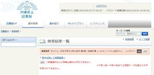

うるがいの話 ある日
最新: 本の予約ができない【うるがいの話 ある日】とは 一日だけのプログです
『うるがいの話』の最新一日だけのプログで、通信料が少なく経済的だ。カニの画像をクリックすると全ての日付が載る『うるがいの話』サイトを表示します
|
|
【うるがいの話】 うるがい(ｳﾙｶﾞｲ urugai)とは、『もずくがに』の名前でとても大きくなります。 |
|---|---|
|
|
【カミマヤーの話】 猫のことを方言でマヤーといいます。カミマヤー（kamimayaa）とは、神の猫のことです。 |
|
【たながぁの音楽】 たながぁ（ﾀﾅｶﾞｰ tanagaa）とは手長えびのことで、何種類かあり大きいのは車 エビぐらいになります。 |

|
【ぶながぁの話】 ぶながぁ(ﾌﾞﾅｶﾞｰ bunagaa)とは、赤い髪の毛、赤い身体、そして身長は１ｍ２０ｃｍ ぐらい、川の蟹を食べているの目撃された。場所は沖縄県国頭郡大宜味村のと ある村僕の隣近所に住んでいる爺さんから、聞いた話です。 |
|
|
【ギーマの話】 ギーマ(giima)とは、山原の里山に咲くスズランに似た、 花を付けます。実は食べられます、 気が付くと口の周りが紫になっています。 |
2023年04月14日 (金）本の予約ができない
16:51

６時前の朝早く、県立図書館の本の予約を行おうとウェブ画面を操作している
と予約ボタンが無い！、ん、不具合か？といろいろ操作していたら、３時から
６時までは、予約の処理が出来ないとメッセージが現れた、知らなかった。
日本文学全集 14 南方熊楠 池澤 夏樹／個人編集--河出書房新社 より引用
南方熊楠、柳田國男、折口信夫、宮本常一という民俗学の巨人たちの傑作選。
柳田は沖縄を「発見」した。日本人の精神の古層を考える時、沖縄は資料の宝
庫である。・・・
西表島が本来は「古見島」であって島の西の港の名が島ぜんたいの名に誤用さ
れたというのも理解できるし、「古見島」や「久米島」の語源が「米」である
のも納得できよう。
こういゆう専門書的なものは、直ぐに眠たくなるので眠る前に読むことにして
いる。
１６時４５分 ビットコインの総資産 ￥１１、８３１（↑２２２）